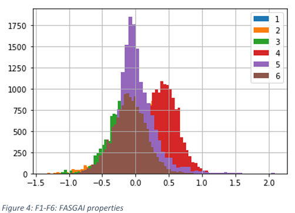
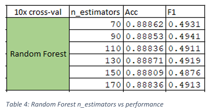
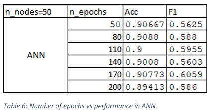

Predicting biological properties from protein sequences properties.
Abstract
The concept that biological entities are composed of patterns lies at the core of the bioinformatics discipline [1]. Discovering, describing, and interpreting these patterns can allow approximate predictions of their functions [1], for example, the ability of a molecule to trigger an immune response [1]. The prediction of these functions is a major factor in producing new vaccines. However, experimental determination of these biological properties can be expensive and time consuming at best, and at a time like the Covid-19 pandemic, the production time for new vaccines becomes ever more crucial to saving lives. This calls for the development of predictive computational models.
This report will present the exploration of a dataset related to linear B-Cell epitopes, comprising of 66 attributes and 15000 observations, and the development of 6 data mining algorithms, Logistic Regression, K-Nearest Neighbours (kNN), Naive Bayes, Decision Tree, Random Forest, and Artificial Neural Networks (ANN) using this dataset. Finally, the models will be compared based on their accuracy and F1 score, showing kNN with 3 neighbours to be the best performing algorithm with an accuracy of 88.8% and F1 score of 63.8%.
Introduction
Classification is a form of supervised machine learning. This process consists of the search for a concise and meaningful model that uses externally supplied instances to produce general hypotheses, which then make predictions about future instances [2].
Model Performance Metrics
Accuracy is the fraction of correct predictions (number of all true predictions divided by the number of all predictions). The higher the accuracy score, the better the model performance. Accuracy is an ideal measure for when true positives and true negatives are more important.
F1 score can be interpreted as the weighted average of the precision and recall (two times the precision by recall, divided by the sum of precision and recall). F1 score is considered perfect at 1, and at its worst, 0. F1 score is a more important measure when false negatives and false positives are more crucial as it can correctly identify threats and predict false alarms. For this reason, F1 score will be the focus of model evaluation in this report, because false alarms in a medical process can be detrimental to people’s lives.
Methodology
All stages of the data analysis procedure for this report have been carried out on Jupiter Notebook. The first stage uses the Pandas and NumPy packages to import and explore the data in detail and the relationships between them. Matplotlib and Seaborn have also been utilised to further explore the data by visualising them and their properties. Subsequently, SciKit-Learn has been used for most of the data pre-processing and model development. However, the feature selection procedure, data balancing and the ANN model required different packages. Mlxtend, Imbalanced-Learn and TensorFlow were the packages used for these processes, respectively; and all required to be installed on the environment, Anaconda Navigator in this case.
Data Analysis
Exploratory Data Analysis
he data consists of 15000 observations with the first two attributes being ID and Epitope, last attribute being the categorical classes and the rest (66) being continuous measured attributes. There are 6652 unique IDs, 2854 unique Epitopes, 2 unique class categories (positive or negative). The number of observations per class, 13046 (negative) and 1954 (positive) indicate an imbalance in the dataset, therefore, data balancing must be carried out to mitigate this imbalance.
All continuous attributes have complete (15000) observations except KF6 (7307), KF9 (7307), KF10 (3707), F1 (1186), T2 (14504) and ST7 (14919). These missing data will need to be handled in the data pre-processing stage.
Using the Matplotlib package in Python, a series of histograms are produced and displayed in figures 1 to 10. From these figures, a normal gaussian distribution can be observed for all features. These figures also show each feature occupying a slightly different scale of values, and even though the difference in scales isn’t astronomical, they we still require standardization in the pre-processing stage to prevent attributes skewing the results due to their difference in scale.

After producing several pair-plots in Seaborn, the plot in figure 11 shows one the more interesting plots produced, with very strong positive correlation between some features (e.g., T1 and ST1. Further plots are attached to appendix I alongside the variances of all the attribute. From the variances in appendix I, features T1, ProtFP1 and ProtFP2 have the highest variances (>1)). This can be seen in the histograms above also. Some of these attributes can be expected to show up after feature selection as data with high variances can sometimes play big roles in influencing results.
From the pair-plots in appendix I it can be observed that there are not many correlations between attributes of the same ‘family’, except some weak correlations in the ST scales (ST), hydrophobic, steric and electronic properties (VHSE), and topological descriptors (T).
Data Pre-processing
First step is separating the 66 attributes as x and the class as y. The class attributes, y, must then be encoded so that models can understand them. In this case, LabelEncoder from SciKit-Learn is used to encode the negative and positive labels as 0 and 1 respectively.
Splitting the data
Before changing the data in any other way, it is important to split the data into training and test sets to avoid data leakage. Here the data has been split by a ratio of 0.75 to 0.25.
Missing values
Next step is to deal with missing values. For the benchmark models, missing values will be replaced by 0. For the optimized models, however, the null values of each attribute will be replaced by the mean of each attribute for null values belonging to that feature. This is an appropriate decision for the dataset as the histograms in the exploratory data analysis show a normal gaussian distribution, therefore replacing missing values by the mean is ideal because it allows to keep the maximum number of observations to optimally train the models with, while also not skewing the results very much. The alternative to this would be to drop the null values, but since there are 7693 tuples that contain at least one null value, dropping them would substantially decrease the size of the dataset and likely produce an underfitted model.
An average value is calculated for the test set independently instead of using the same average values from the training set, this is done to avoid data leakage.
Feature scaling
The benchmark models do not require any feature scaling in this report, as the goal of the benchmark models is to analyse the performance of models using the raw data. However, for the optimized models, to make sure attributes of a different scale do not overpower the results, standardization is performed to keep all the data in the same range while preserving their relative relationship.
It is important to note that both training and test sets are standardized using the same scale, otherwise it would defeat the purpose of this step and skew the results.
Feature selection/extraction
To ensure conciseness in the optimized models, techniques must be used to obtain an optimal subset of features that the models can use and produce relevant results. Two techniques are considered for this: feature extraction and feature selection.
The difference between the two is that feature selection selects only the features of the original dataset that help the model perform best, whereas in feature extraction, the original features are rendered to create new ones that will do the same. Principle Component Analysis (PCA) is an example of feature extraction. Step-forward and step-backward sequential feature selection are powerful examples of performing feature selection. Both feature reduction techniques are performed on the data and their effects analysed.
Data balancing
For the benchmark models, no data balancing technique will be adopted. For optimized models however, the SMOTE over sampling technique will be carried out to balance out the data. This technique is ideal compared to other techniques such as under-sampling because it uses the kNN technique to predict new datapoints based on the pre-existing relationships between the observations. This can produce samples much closer to the real-world. Also, under-sampling requires much bigger datasets to produce very meaningful results because under sampling with small datasets can produce a bunch of underfit models.
Model Development
For the benchmark performances, all models will be trained on default parameters where possible. At a later stage, parameter tuning is carried out to find the ideal parameters for each model.
When randomization is required, random state 0 is utilised.
Code samples are provided in appendix II for better description of how the models were trained and optimized.
Benchmark
As stated before, the benchmark model only requires the null values in the data to be replaced by 0 so than all models can run, and no other pre-processing is performed. This is used to compare the model performances with after optimization.
Optimization
Firstly, to optimize the models, further pre-processing is carried out. This consists of replacing the null values by the mean of each attribute and performing standardization on the data.
Next, feature selection is performed on the data and the 15 most effective features are taken forward. Subsequently, feature extraction is performed using PCA reducing the features to 14. This is done to fulfil the goal of classification machine learning, which consists of developing a concise and meaningful model.
To omit outliers from the data, the plots of the 15 selected features are observed and the ones showing possible outliers are used to remove anomalies with, using the percentile method. The 15 features are then reduced to 14 using PCA for a more concise and meaningful model.
Finally, the data is balanced using SMOTE over sampling.
It is important to note that a 10-fold cross-validation is carried out for all models (This excludes the ANN model). This is to get a true measure for the generalizability of the models to novel data and not just the training performance.
Results & Discussion
Benchmark
Important parameters to note are the criterion for Decision Tree and Random Forest, number of estimators for Random Forest, metric parameters for kNN; epochs, batch size and activation functions, loss function, compiler optimizer, metrics and number of hidden and output layers for ANN.
The criterion used for Decision Tree and Random Forest is Entropy. For the number of estimators of Random Forest, 100 is used for benchmark.
For kNN, the Minkowski metric and power parameter of 2 is utilised to measure Euclidean distance.
The ANN model consists of two hidden layers, each layer with 10 nodes. The activation function of the hidden layers must be the rectifier function, but for the output layer it is sigmoid. This gives the probability of each classification (which must be rounded to compare with test set). The output layer must have 1 node for the binary classification to be satisfied. The ANN is compiled using the “adam” optimizer is, binary cross-entropy for the loss function and accuracy as the metric and fitted to the data with 100 epochs and a batch size of 32. It is important to only apply over sampling to the training to avoid data leakage.
Based on the benchmark performances in table 1, the best performing classifiers are, kNN, Decision Tree, Random Forest, and ANN, with accuracies 90.0%, 87.3%, 88.7%, 88.3% and F1 scores of 53.0%, 48.6%, 47.7% and 42.5%, respectively.
Parameter tuning
Further investigation is undertaken to find the optimal number of neighbours for kNN. For this process, the value 1 is avoided to avoid vulnerability to bias, and odd numbers are preferred to avoid ties. Table 2 shows that the best value for number of neighbours in kNN is 3, increasing the models’ performance to 90.1% and 56.5% for accuracy and F1, respectively. Therefore, from this point on, 3 neighbours are assumed for kNN.
From table 3 it can be observed that the Gini criterion had a better performance than entropy, therefore, the parameter Gini will be used for Decision Tree and Random forest from this point. This is also ideal for efficiency as Entropy has a higher calculation cost.
From table 4 the optimal number of estimators for Random Forest is 90 with the highest F1 score of 49.4% (slightly higher than benchmark with criterion entropy). To avoid under- and over-fitting, number of estimators outside on the range in table 4 are discarded.
From the results in table 5 and 6, and backed by the result in table 7, the best parameters for ANN in terms of nodes and epochs are found to be 60 and 170, respectively.
Tables 8-9 show the performances of the models after replacing the missing values by the mean of each attribute then performing feature selection and feature extraction. The result in these tables shows the Naïve Bayes algorithm making a significant improvement in accuracy compared to its benchmark (8.3% increase), especially after feature selection.
The four best performing models from benchmark, that is kNN, Decision Tree, Random Forest and ANN, display different behaviours after data pre-processing. kNN and ANN show major improvements in F1 score, increasing by 6.1% and 19.8% respectively, compared to their benchmark. Both algorithms show similar performances in accuracy and F1. Decision Tree and Random forest on the other hand, show very slight improvements in accuracy but a small decline in F1. It can be inferred from these results that kNN is the best performing model so far.
Outliers
Exploring the data further by observing the pair-plots in figure 12, three attributes are suspected of showing signs of having major outliers based on their histograms; ProtFP5, ProtFP1, Z5 and BLOSUM6 (figure 13-16).
Using the percentile technique, data outside the 5th and 95th percentile are removed for each suspected attribute, and the model performances are shown in Table 11.
From table 11 its observed that after omitting potential outliers from ProtFP1, ProtFP5 and Z5, F1 scores of the better algorithms generally perform less worse in the ProtFP1 and Z5 outlier omission, and some of their accuracies even increase. To investigate further, ProtFP1 and Z5 outlier omission are performed at a wider percentile range to see if the F1 scores can be recovered. The results are shown in table 12. From these results its observed that the best performing model from before, kNN, performs slightly better in the Z5 outlier omission than the feature reduced version, with an accuracy of 91.2% and F1 of 62.9% (0.31% increase in F1), beating the next best model in F1 thus far, ANN, by almost 3%.
In the exploratory data analysis, the data showed major imbalance between the instances of negative and positive classes. To mitigate this, the SMOTE oversampling techniques is adopted, and the results are shown in table 13. To avoid data leakage when cross validating, the oversampling is performed only on the training sets of each split.
Table 13 shows the performances of the models trained on the oversampled dataset, with a 5-fold cross-validation done the correct way. Note that the ANN model is not cross validated.
These results indicate improvements in F1 scores with the oversampled data compared to the performances at the outlier detection step. Models such as Logistic Regression and Random Forest make a significant jump in F1 (21% and 8.9%, respectively). Decision Tree, however, shows a decline in accuracy but does not make any significant changes in F1, while kNN is still outperforming all models with a 0.87% increase in F1. While kNN’s accuracy also declines slightly in this process, its increase in F1 makes it the ideal due to its relevance to this problem.
The next best performing model in F1 is ANN (59.1%), which is not cross validated. But even if with cross-validation, ANN could match kNN in F1 performance, kNN would still be preferred due to its simplicity [3].
Conclusion
In conclusion, the kNN algorithm with 3 neighbours, trained on 14 extracted features from 15 selected features, and outliers omitted from the Z5 attribute outside the 0.01-99.9th percentile range, is the best algorithm with 88.8% accuracy and 63.8% F1 score. The F1 score indicates that this algorithm, compared to the others in this report, is more ideal for being used to predict biological properties of proteins in vaccine production because it shows a stronger ability in being able to predict false predictions when they do occur. Considering, also, that a 5-fold cross-validation is performed, it can be expected for this algorithm to generalise well to new and unseen data.
Future work includes optimizing the kNN model further by applying extensive domain knowledge to the outlier detection process and applying more sophisticated anomaly detection methods, such as model based outlier detection.
References
[1] De Groot, A.S., Cohen, T., Ardito, M., Moise, L., Martin, B. and Berzofsky, J.A., 2010. Use of bioinformatics to predict MHC ligands and T-cell epitopes: application to epitope-driven vaccine design. Methods in Microbiology, 37, pp.35-66.
[2] Kotsiantis, S.B., Zaharakis, I. and Pintelas, P., 2007. Supervised machine learning: A review of classification techniques. Emerging artificial intelligence applications in computer engineering, 160(1), pp.3-24.
[3] Peterson, L.E., 2009. K-nearest neighbor. Scholarpedia, 4(2), p.1883